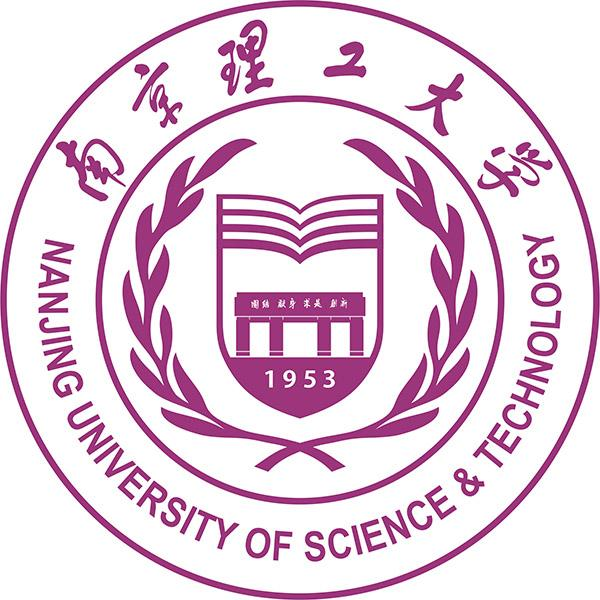
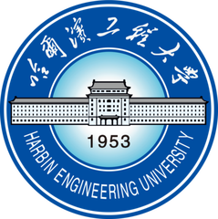

Hao Tang (唐昊)Ph.D. CandidateSchool of Computer Science and Engineering, Nanjing University of Science and Technology Office: Room 2046, CSE Building Email: tanghao0918_at_njust.edu.cn CV • Google Scholar • Github |
About Me
I'm Hao Tang, currently a 4th-year Ph.D. Candidate at Nanjing University of Science and Technology in Intelligent Media Analysis Group (IMAG), supervised by Prof. Jinhui Tang and worked closely with Prof. Zechao Li. Before that, I received my B.Sc. degree from Harbin Engineering University in June 2018. My primary research interests mainly focus on Deep Learning and its applications in Computer Vision and Multimedia. The ultimate goal of my research is to develop a machine that can learn from Limited, Dynamic and Imperfect data in real-world scenes like humans.
Education
Nanjing University of Science and Technology, China (Sep. 2018 - Now)

- Doctor of Philosophy (Ph.D.), Computer Science
- Advisor: Prof. Jinhui Tang
- Successive Master-Doctor Program
Harbin Engineering University, China (Sep. 2014 - Jun. 2018)

- Bachelor of Engineering (B.E.), Automation
- Graduated with Excellent Thesis Award
Recent News
- 2022/02: I was invited to be a TPC member for ACM MM 2022.

- 2021/08: One paper accepted by IJCAI 2021 LTDL Workshop was awarded as the Best Paper!
- 2021/08: I was invited to be a reviewer for AAAI 2022.
- 2021/07: Our team won the 5th place of ICIG 2021 Challenge!
Workshop: Few-Shot Learning-Based High-speed Railway Catenary Image Detection and Analysis - 2021/07: I was selected for the Excellent Ph.D. Students Sponsorship Program by NJUST!
- 2021/06: One paper was accepted by IJCAI 2021 LTDL Workshop!
- 2021/05: I was invited to be a reviewer for ACM MM 2021.
- 2021/05: One paper was accepted by IEEE ICIP 2021!
- 2021/03: One paper was accepted by IEEE ICME 2021!
- 2020/11: One invention patent (ZL201710795957.3) was duly authorized.
- 2020/08: One paper was accepted by ACM Multimedia 2020.
Research Interests
- Multimedia: Zero/Few-shot Learning, Fine-Grained Visual Classification/Retrieval, ...
- Computer Vision: Weakly-supervised Object Localization/Detection, Image Restoration
Learning From Limited or Imperfect Data
All Publications
Selected Publications
2021 (* indicates equal contributions)
Knowledge-Guided Semantic Transfer Network for Few-Shot Image Recognition
Zechao Li, Hao Tang, Zhimao Peng, Guo-jun Qi, and Jinhui Tang
Under Review, 2021
Zechao Li, Hao Tang, Zhimao Peng, Guo-jun Qi, and Jinhui Tang
Under Review, 2021
See Closer Know Better: Object-aware Alignment Network For Few-shot Fine-grained Recognition
Zican Zha*, Hao Tang* and Yunlian Sun
Under Review, 2021
Zican Zha*, Hao Tang* and Yunlian Sun
Under Review, 2021
Learning Attention-Guided Pyramidal Features for Few-shot Fine-grained Recognition
Chengcheng Yuan*, Hao Tang*, Dong Zhang, Xinguang Xiang and Zechao Li
IJCAI Workshop 2021 (Oral Presentation, Best Paper Award)
Chengcheng Yuan*, Hao Tang*, Dong Zhang, Xinguang Xiang and Zechao Li
IJCAI Workshop 2021 (Oral Presentation, Best Paper Award)
Coupled Patch Similarity Network For One-Shot Fine-Grained Image Recognition
Sheng Tian, Hao Tang, and Longquan Dai
IEEE ICIP 2021
Sheng Tian, Hao Tang, and Longquan Dai
IEEE ICIP 2021
Learning a Tree-Structured Channel-Wise Refinement Network for Efficient Image Deraining
Di Wang*, Hao Tang*, Jinshan Pan, and Jinhui Tang
IEEE ICME 2021
Di Wang*, Hao Tang*, Jinshan Pan, and Jinhui Tang
IEEE ICME 2021
2020
BlockMix: Meta Regularization and Self-Calibrated Inference for Metric-Based Meta-Learning
Hao Tang, Zechao Li, Zhimao Peng, and Jinhui Tang
ACM MM 2020 (Oral Presentation)
Hao Tang, Zechao Li, Zhimao Peng, and Jinhui Tang
ACM MM 2020 (Oral Presentation)
Honors
- Best Paper Award at Long-Tailed Distribution Learning Workshop, IJCAI 2021
- Excellent Ph.D. Students Sponsorship Program of Nanjing University of Science and Technology, 2021
- First Prize Scholarship of Nanjing University of Science and Technology, 2018, 2019, 2020
- Excellent Bachelor Thesis at Harbin Engineering University, 2018
- Excellent Graduate of Harbin Engineering University, 2018
- First-class Innovation Scholarship, Ministry of Industry and Information Technology of China, 2017
Professional Services
- TPC Member for IEEE MIPR(2020~2022), ACM MM(2022).
- Journal Reviewer for TMM, TNNLS, TVC, KSII TIIS.
- Conference Reviewer for AAAI(2021,2022), ACM MM(2021).
Cooperation & Communication
-
I'm always interested in meeting new people and hearing about potential collaborations. If you'd like to work together or get in contact with me, please email me.